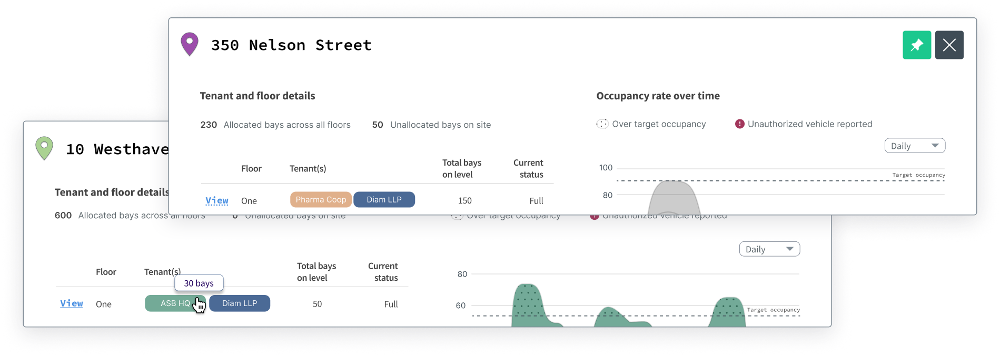

Revamping the Dashboard
for a client’s parking site management application
The main dashboard lacked visual cues and affordances for navigation, making it difficult to grasp the key features to showcase.

approach
In an interview workshop setting with the client, I
facilitated and adopted the perspectives of two key
individuals for user interviews:
-
Subject matter expert & Product ownerin order to understand the underlying business logic and its product goals and value proposition.
-
New userin order to define user flows of daily users, what problems they are trying to solve and why it’s needed.
It revealed the core usability issues that my user interface needed to address, especially on the main dashboard. Additionally, by defining it as a workshop, the client could participate in the design solution and help narrow the project scope to just pertinent screens and user flows.
Map as anchor for all user flows
- Apply affordances to guide user around one dataset to another
- Find opportunity to use spatial assets to reduce information overload
- Use visuals and typography to organize different types of menu-item content
- Where important information is far too complex to be in a dashboard, avoid showcasing more than necessary


- Static data from tables become graphical charts to reduce visual clutter and improve data comprehension.
- Pie charts frame the rest of the content displayed in the Dashboard. Interacting with each pie chart reveals specific location details intentionally designed within the map container.

Updating the app to match users' mental model
- Think of tracking or monitoring data they wanted to search for first
- then think about the parking location that pertains to this data
- Users manage multiple parking locations, and therefore they think and complete tasks in terms of one unique location at a time
- The job the user has to do is the same across parking locations but the data set is unique to that specific location
- Static data grouped into cards: this is any data that didn't require user input or immediate user awareness 
- Transient data grouped selectively: this is any data that was ever-changing. It was difficult to understand the relationship between moving parts. I addressed this issue by focusing on simplifying the menu for example: introducing a "tab"-like element within the navigation bar.

Physical documents represented on screen
I advocated for visually illustrating the task of mapping parking sites as the first step because users are more likely to learn if the UI matches their respective real life tasks. The following complex UI screen was designed as a starting point for further discussions with the rest of team.

With 13 menu-items in the navigation sidebar and little affordances to guide users through them; it was clear to see content hieararchy was a major UX gap. The following steps detail my approach to a simpler navigation bar.

With a set of questions in hand, I sought to understand the current tasks users completed on each of the linked pages. Answers also clarified and aligned assumptions for everyone involved in the project.

Questions for each screen:
What can the user see?
What actions can the user perform (i.e. searching, exporting, etc.)?
Why is the information valuable for users?
What does the user want to do with the information?
Would the user need to perform any actions prior?
With the purpose of each screen defined, I was able to construct the relationship between product, people, and the system and where the intended business goals fit.
Understanding the relationship between location of parking and vehicle status
and
how the application shows this relationship systemically
vs
the user’s mental model for completing their roles and responsibilities in this industry

Equipped with definitions of the screens and their value for the business at large, I measured total actions users took for each of the 13 pages and charted it against the priority of the task. The results helped narrow down the content in the navigation bar by half.
Despite redesigning a narrowed-down list of menu-items for the navigation bar, I later learned some
interactive
components triggered changes to datasets and data files in
other areas of the system without the user's knowledge (super confusing).
For example, if an user updated the parking fee attributes
for a single vehicle, it could override other billing
charges across accounts (unbeknownst to the user who made
the change).
Discovering this issue threw a major wrench in the works due to the complexity of redesigning for
status changes and alerts. Keeping the client's goal in mind for the redesign, I proposed using the
dashboard UI to highlight as many of the uncomplicated status changes as possible.
Space management and Site settings, Activity and Users
Relationship between menu-items
The simpler the relationship, the better the content will be for a dashboard.


The higher the priority and the less it triggers unknown changes across the system, the better the content will be for the dashboard.
The biggest challenge was the difficulty in mapping attributes
and contingencies for dataset relationships by business value
in a simpler way than how it was initially shown.
Besides feedback from product owners, defining the
dataset by universal heuristic patterns (ex. more information
leads to more confusion) was a quick win that ultimately
guided the design direction of the rest of the application
towards a "less is more" solution.
Stakeholders had a general idea of the kind of information
they wanted to see as part of the final design. I was hesitant
to accept the client's design requests without fully
comprehending why (if at all) the changes would benefit the
user.
In most cases, I would advocate for the
end-user and insist on defining user needs with the client.
However, in this case, I chose to trust the client's word
because they were by nature and as an office culture: open,
collaborative, and resourceful for all the user data that was
lacking. Such an environment allowed me to comfortably clarify
or update other parts of the design without delays to the
overall contract timeline. It made for a pleasureable work
experience with the teams involved. I try to find (and reflect
in my own engagment and behaviour) this empathetic way of
working together.